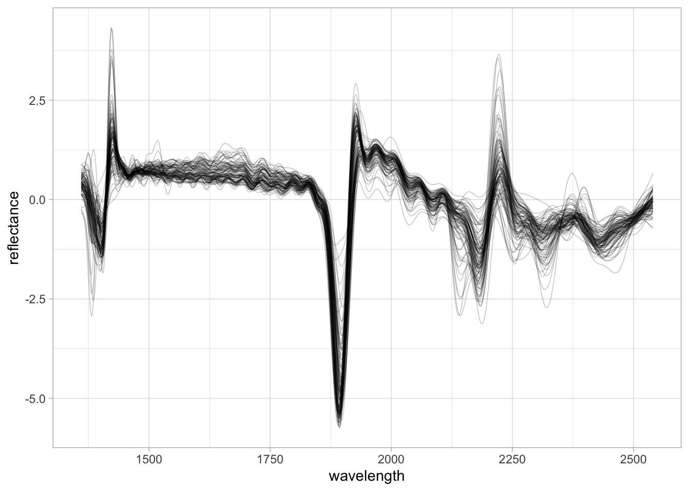
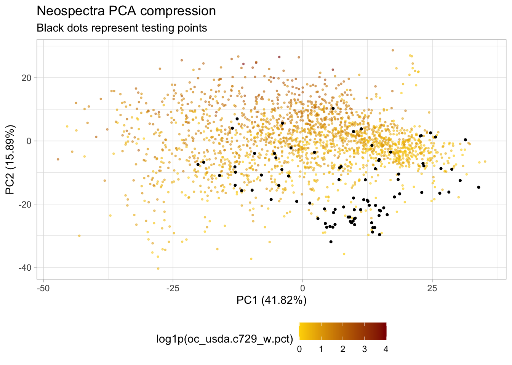
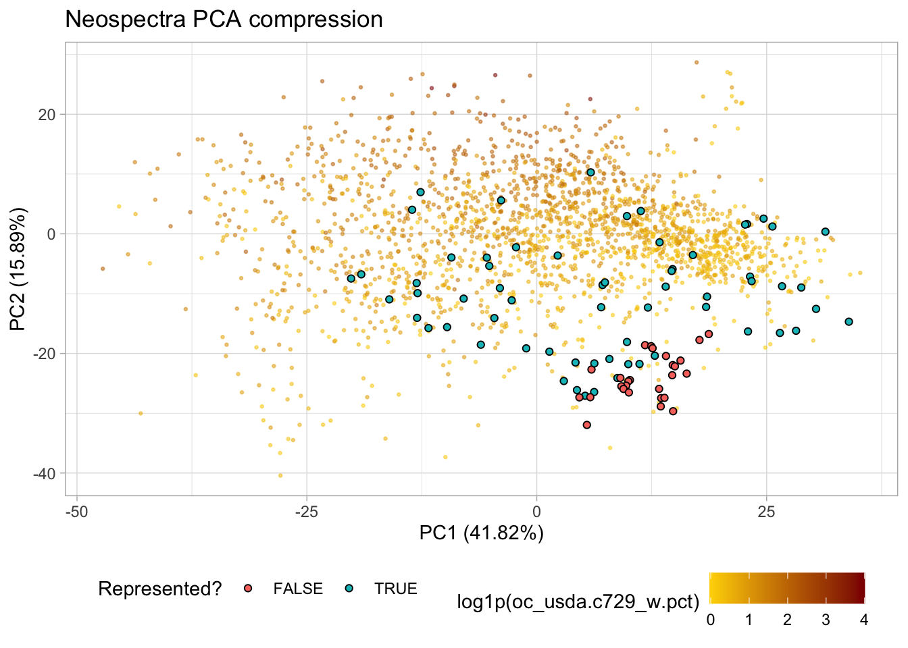
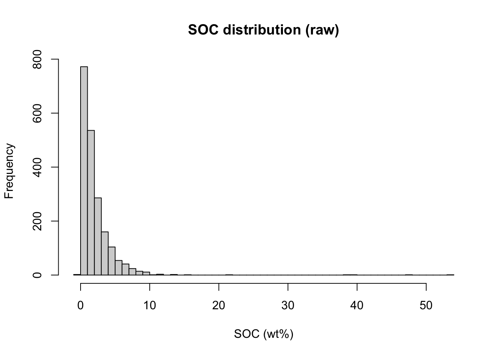
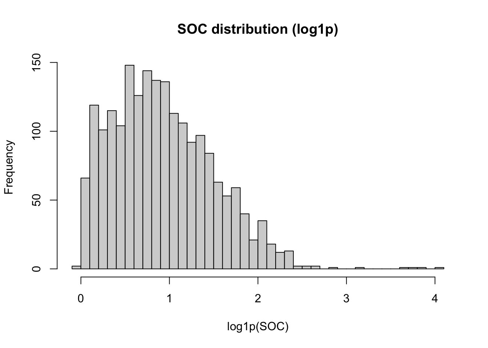
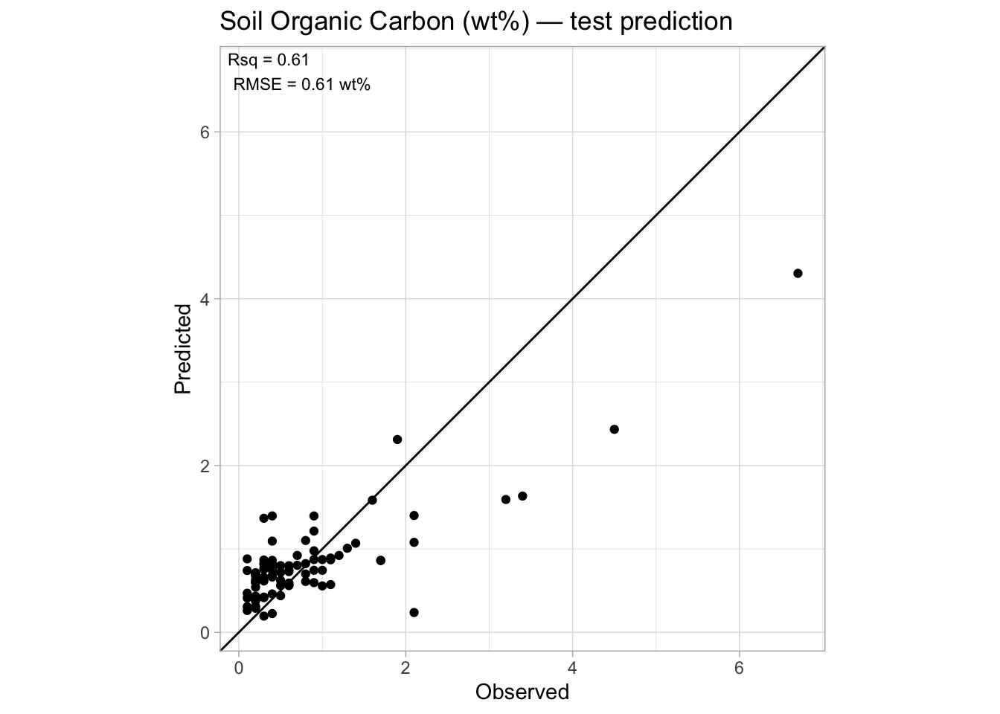
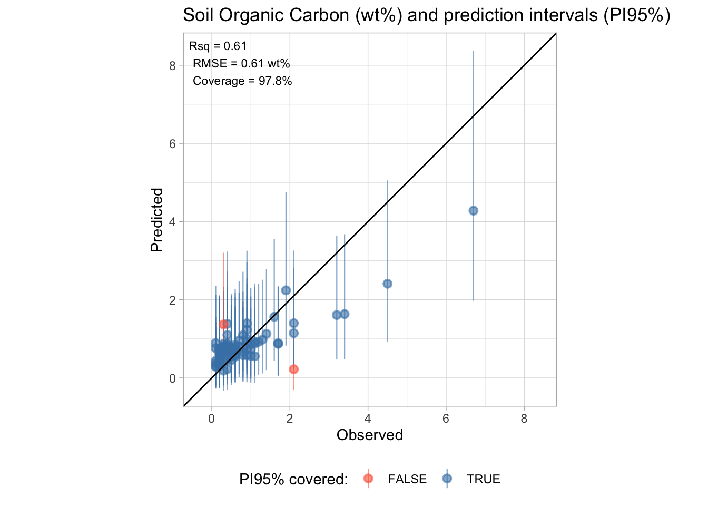

library("tidyverse")
library("prospectr") # prep preprocessing
library("tidymodels")
library("probably") # Conformal prediction intervals
library("rules")
library("Cubist") # Cubist engine
library("kernlab") # SVM engine
library("ranger") # Random forest engine
library("yardstick") # Performance metrics
tidymodels_prefer() # Resolve common function name conflicts4 Machine Learning
In this section, we introduce the machine learning (ML) pipeline for estimating soil organic carbon (SOC) from NIR spectra using the tidymodels framework. We start from the raw Neospectra database, apply prep preprocessing, compress the spectra with PCA, and then train and compare four models. We evaluate their generalization on African soil samples held out as a geographic test set.
The tidymodels framework is a collection of packages for modeling and machine learning that share a common design philosophy and interface. A comprehensive reference is available at the tidymodels documentation.
A list of all required packages for this section is provided in the following code chunk:
4.1 Data preparation
We use the NIR Neospectra Handheld database shared as part of the OSSL, which contains more than 2,000 unique soil samples scanned in replicates with different devices. The full pipeline covered here — download, filter, prep preprocessing, train/test split, PCA compression, and representation check — produces the feature matrix that feeds directly into the ML models below.
4.1.1 Download and filter
## Internet configuration for downloading large datasets
options(timeout = 10000)
neospectra.soil <- read_csv("https://storage.googleapis.com/soilspec4gg-public/neospectra_soillab_v1.2.csv.gz")Rows: 2106 Columns: 24
── Column specification ────────────────────────────────────────────────────────
Delimiter: ","
chr (1): efferv_usda.a479_class
dbl (23): id.sample_local_c, oc_usda.c729_w.pct, c.tot_usda.a622_w.pct, n.to...
ℹ Use `spec()` to retrieve the full column specification for this data.
ℹ Specify the column types or set `show_col_types = FALSE` to quiet this message.dim(neospectra.soil)[1] 2106 24neospectra.site <- read_csv("https://storage.googleapis.com/soilspec4gg-public/neospectra_soilsite_v1.2.csv.gz")Rows: 2106 Columns: 32
── Column specification ────────────────────────────────────────────────────────
Delimiter: ","
chr (20): id.project_ascii_txt, id.location_olc_txt, location.country_iso.31...
dbl (11): id.sample_local_c, id.layer_local_c, longitude.point_wgs84_dd, lat...
lgl (1): layer.sequence_usda_uint16
ℹ Use `spec()` to retrieve the full column specification for this data.
ℹ Specify the column types or set `show_col_types = FALSE` to quiet this message.dim(neospectra.site)[1] 2106 32neospectra.nir <- read_csv("https://storage.googleapis.com/soilspec4gg-public/neospectra_nir_v1.2.csv.gz")Rows: 8151 Columns: 615
── Column specification ────────────────────────────────────────────────────────
Delimiter: ","
chr (10): id.scan_local_c, scan.lab_utf8_txt, scan.nir.model.name_utf8_txt...
dbl (603): id.sample_local_c, scan.nir.model.serialnumber_utf8_int, scan_ni...
date (2): scan.nir.date.begin_iso.8601_yyyy.mm.dd, scan.nir.date.end_iso.8...
ℹ Use `spec()` to retrieve the full column specification for this data.
ℹ Specify the column types or set `show_col_types = FALSE` to quiet this message.dim(neospectra.nir)[1] 8151 615We select only the relevant columns and average the replicate scans so each soil sample maps to a single spectrum. We also rename spectral columns to plain numeric wavelength values.
# How many samples from each country?
# Most samples are from USA, others from African countries
# We will use this column to define the train/test split
neospectra.site %>%
count(location.country_iso.3166_txt)# A tibble: 4 × 2
location.country_iso.3166_txt n
<chr> <int>
1 GHA 66
2 KEN 10
3 NGA 14
4 USA 2016# Selecting relevant site data
neospectra.site <- neospectra.site %>%
select(id.sample_local_c, location.country_iso.3166_txt)
# Selecting relevant soil data
neospectra.soil <- neospectra.soil %>%
select(id.sample_local_c, oc_usda.c729_w.pct)
# Selecting relevant NIR data and taking average across repeats
neospectra.nir <- neospectra.nir %>%
select(id.sample_local_c, starts_with("scan_nir")) %>%
group_by(id.sample_local_c) %>%
summarise(across(everything(), mean)) %>%
ungroup()
# Renaming spectral column headers to plain numeric wavelength values
old.names <- neospectra.nir %>%
select(starts_with("scan_nir")) %>%
names()
new.names <- gsub("scan_nir.|_ref", "", old.names)
neospectra.nir <- neospectra.nir %>%
rename_with(~new.names, all_of(old.names))
spectral.column.names <- new.names
neospectra.nir[1:5, 1:5]# A tibble: 5 × 5
id.sample_local_c `1350` `1352` `1354` `1356`
<dbl> <dbl> <dbl> <dbl> <dbl>
1 26949 0.341 0.341 0.342 0.342
2 26950 0.368 0.368 0.369 0.369
3 26951 0.554 0.553 0.553 0.553
4 26952 0.630 0.629 0.629 0.629
5 26953 0.565 0.565 0.566 0.567We then join all three tables and remove samples without SOC values.
neospectra <- left_join(neospectra.site,
neospectra.soil,
by = "id.sample_local_c") %>%
left_join(., neospectra.nir, by = "id.sample_local_c") %>%
filter(!is.na(oc_usda.c729_w.pct))
neospectra[1:5, 1:5]# A tibble: 5 × 5
id.sample_local_c location.country_iso.3166…¹ oc_usda.c729_w.pct `1350` `1352`
<dbl> <chr> <dbl> <dbl> <dbl>
1 100540 USA 3.19 0.350 0.351
2 101337 USA 8.43 0.375 0.375
3 101343 USA 0.69 0.250 0.250
4 101372 USA 1.81 0.463 0.464
5 102078 USA 1.75 0.344 0.344
# ℹ abbreviated name: ¹location.country_iso.3166_txt4.1.2 Preprocessing
We combine Savytzky-Golay first derivative with Standard Normal Variate preprocessing — described in detail in the Processing section — to correct for offset and light scattering effects before compression.
neospectra.nir.prep <- neospectra %>%
select(all_of(spectral.column.names)) %>%
as.matrix() %>%
savitzkyGolay(X = ., p = 2, w = 11, m = 1, delta.wav = 2) %>%
prospectr::standardNormalVariate(X = .) %>%
as_tibble() %>%
bind_cols({neospectra %>%
select(id.sample_local_c,
location.country_iso.3166_txt,
oc_usda.c729_w.pct)}, .)
# Quick visualization of preprocessed spectra
set.seed(42)
neospectra.nir.prep %>%
sample_n(100) %>%
pivot_longer(any_of(spectral.column.names),
names_to = "wavelength",
values_to = "reflectance") %>%
mutate(wavelength = as.numeric(wavelength),
reflectance = as.numeric(reflectance)) %>%
ggplot(data = .) +
geom_line(aes(x = wavelength, y = reflectance,
group = id.sample_local_c),
alpha = 0.25, linewidth = 0.25) +
theme_light()
4.1.3 Train/test split
We split by geography: USA samples for training, African samples for testing. This simulates a realistic scenario where a model trained on one region is applied to a new, geographically distinct region.
neospectra.train <- neospectra.nir.prep %>%
filter(location.country_iso.3166_txt == "USA")
neospectra.test <- neospectra.nir.prep %>%
filter(location.country_iso.3166_txt != "USA")
nrow(neospectra.train)[1] 2016nrow(neospectra.test)[1] 904.1.4 PCA compression and projection
Partial Least Squares (PLS) and Principal Component Analysis (PCA) are popular linear decomposition methods that help build regression models or explore the multivariate associations between spectra and variables of interest. Within this scope, the linear decomposition produces new orthogonal features such that the correlation between any pair of new variables is zero (Chang et al. 2001; Santana et al. 2023).
PLS is preferred when the goal is to find orthogonal features of the spectra that are most predictive of a soil property. On the other hand, if the goal is to find orthogonal features that maximally explain the variability of the spectra irrespective of the variable of interest, then PCA can be adopted.
Both methods reduce the dimensionality of the original data and produce uncorrelated features, controlling collinearity. A few orthogonal features obtained from the spectra can replace the original spectra matrix when training a model, with the downside of sacrificing some of the original spectral information.
We fit a PCA compression recipe using step_normalize() and step_pca() from tidymodels, retaining enough components to explain 99% of the cumulative variance (threshold = 0.99). The recipe is fitted (prep()) on the training data only, then applied to both sets with bake().
# Define and fit the PCA recipe on training data
pca.recipe <- recipe(neospectra.train) %>%
update_role(id.sample_local_c, new_role = "id variable") %>%
update_role(location.country_iso.3166_txt, new_role = "id variable") %>%
update_role(oc_usda.c729_w.pct, new_role = "outcome") %>%
update_role(any_of(spectral.column.names), new_role = "predictor") %>%
step_normalize(all_predictors()) %>%
step_pca(all_predictors(), threshold = 0.99, id = "pca")
pca.prep <- prep(pca.recipe, training = neospectra.train)
# How many components were retained?
pca.prep── Recipe ──────────────────────────────────────────────────────────────────────── Inputs Number of variables by roleoutcome: 1
predictor: 591
id variable: 2── Training information Training data contained 2016 data points and no incomplete rows.── Operations • Centering and scaling for: 1360, 1362, 1364, 1366, 1368, ... | Trained• PCA extraction with: 1360, 1362, 1364, 1366, 1368, 1370, ... | Trained# Explained variance per component from tidy()
pca.expvar <- tidy(pca.prep, id = "pca", type = "variance") %>%
filter(terms == "percent variance") %>%
pull(value)
# Extract training and test PC scores via bake()
train.pca.scores <- bake(pca.prep, new_data = neospectra.train)
test.pca.scores <- bake(pca.prep, new_data = neospectra.test)
# PC column names produced by step_pca
pc.names <- train.pca.scores %>%
select(starts_with("PC")) %>%
names()
# PCA plot coloured by log1p(SOC)
p.pca <- ggplot(train.pca.scores) +
geom_point(aes(x = PC01, y = PC02,
color = log1p(oc_usda.c729_w.pct)),
alpha = 0.5, size = 0.5) +
scale_colour_gradient(low = "gold", high = "darkred") +
labs(title = "Neospectra PCA compression",
x = paste0("PC1 (", round(pca.expvar[1], 2), "%)"),
y = paste0("PC2 (", round(pca.expvar[2], 2), "%)")) +
theme_light() +
theme(legend.position = "bottom")
# Adding test samples to PCA plot
p.pca +
geom_point(data = test.pca.scores,
aes(x = PC01, y = PC02),
size = 0.75) +
labs(subtitle = "Black dots represent testing points")
4.1.5 Representation flag
Before modeling, it is good practice to check whether the test samples are well represented by the training feature space. We use the Q-statistic (sum of squared residuals from PCA back-transformation) for this purpose. A good overview of this approach can be found in Santana et al. (2023).
Each spectrum is back-transformed from PC scores to the original spectral space using the loadings extracted from the prepped recipe via tidy(). The residual between the original and back-transformed spectrum is used to compute the Q-statistic, which is compared against a critical value derived from the training set at a 99% confidence level (Jackson and Mudholkar 1979; Laursen et al. 2011; Santana et al. 2023).
# Extract loadings, centering means, and scaling SDs from the prepped recipe
n.pad <- nchar(length(pc.names))
pca.loadings <- tidy(pca.prep, id = "pca", type = "coef") %>%
mutate(component = paste0("PC", formatC(as.integer(gsub("PC", "", component)),
width = n.pad, flag = "0"))) %>%
pivot_wider(names_from = component, values_from = value) %>%
select(terms, all_of(pc.names)) %>%
column_to_rownames("terms") %>%
as.matrix()
norm.stats <- tidy(pca.prep, number = 1) %>% # step_normalize is step 1
select(terms, statistic, value) %>%
pivot_wider(names_from = statistic, values_from = value)
train.center <- setNames(norm.stats$mean, norm.stats$terms)
train.scale <- setNames(norm.stats$sd, norm.stats$terms)
# Get PC scores as matrices (columns ordered to match loadings)
train.scores.mat <- train.pca.scores %>%
select(all_of(pc.names)) %>%
as.matrix()
test.scores.mat <- test.pca.scores %>%
select(all_of(pc.names)) %>%
as.matrix()
# Back-transform: rotate scores to spectral space, then rescale and recenter
train.bt <- train.scores.mat %*% t(pca.loadings)
test.bt <- test.scores.mat %*% t(pca.loadings)
train.bt <- sweep(train.bt, MARGIN = 2, FUN = "*", STATS = train.scale)
test.bt <- sweep(test.bt, MARGIN = 2, FUN = "*", STATS = train.scale)
train.bt <- sweep(train.bt, MARGIN = 2, FUN = "+", STATS = train.center)
test.bt <- sweep(test.bt, MARGIN = 2, FUN = "+", STATS = train.center)
# Original spectra matrices (rows ordered to match scores)
neospectra.train.spectra <- neospectra.train %>%
select(any_of(spectral.column.names)) %>%
as.matrix()
neospectra.test.spectra <- neospectra.test %>%
select(any_of(spectral.column.names)) %>%
as.matrix()
# Q-statistic: sum of squared differences between original and back-transformed
test.q.stats <- apply((neospectra.test.spectra - test.bt)^2,
MARGIN = 1, sum)# Critical value from the training set (1% significance level)
E <- cov(neospectra.train.spectra - train.bt)
teta1 <- sum(diag(E))^1
teta2 <- sum(diag(E))^2
teta3 <- sum(diag(E))^3
h0 <- 1 - ((2*teta1*teta3) / (3*teta2^2))
Ca <- 2.57 # 1% significance level
Qa <- teta1*(1 - (teta2*h0*((1-h0)/teta1^2)) +
((sqrt(Ca*(2*teta2*h0^2)))/teta1))^(1/h0)
Qa[1] 1.439492# Flag test samples and visualize on PCA plot
test.pca.scores <- test.pca.scores %>%
mutate(q_stats = test.q.stats,
represented = q_stats <= Qa)
p.pca +
geom_point(data = test.pca.scores,
aes(x = PC01, y = PC02, fill = represented),
shape = 21, size = 1.5) +
labs(fill = "Represented?")
4.2 Machine learning with tidymodels
With the PC scores in hand, we now build and compare four predictive models. The pc.names vector defined during the compression step above identifies the predictor columns for all models.
4.2.1 log1p transformation
SOC values have a right-skewed distribution. We apply log1p() to the outcome before modeling to reduce this skewness and improve model performance. Because the transformation is applied outside the recipe, we back-transform predictions with expm1() when reporting final results.
NoteWhy log1p outside the recipe?
In tidymodels, step_log() applied to an outcome inside a recipe is skipped during prediction by default (skip = TRUE). This means predictions returned to the user are also on the log scale — you would still need to back-transform manually. Applying log1p() before training is more transparent and avoids confusion, especially for beginners.
# Distribution of raw SOC values in the training set
hist(train.pca.scores$oc_usda.c729_w.pct, breaks = 50,
main = "SOC distribution (raw)", xlab = "SOC (wt%)")
train.data <- train.pca.scores %>%
mutate(oc_usda.c729_w.pct = log1p(oc_usda.c729_w.pct))
test.data <- test.pca.scores %>%
mutate(oc_usda.c729_w.pct = log1p(oc_usda.c729_w.pct))
# Distribution after transformation
hist(train.data$oc_usda.c729_w.pct, breaks = 50,
main = "SOC distribution (log1p)", xlab = "log1p(SOC)")
4.2.2 Recipe
In tidymodels, a recipe defines the preprocessing steps applied to the data before modeling. Since we are working with PC scores that are already orthogonal, the main step here is normalization (centering and scaling) of the predictors. We assign roles to each column so that tidymodels handles non-predictor columns gracefully.
base.recipe <- train.data %>%
recipe() %>%
update_role(id.sample_local_c, new_role = "id variable") %>%
update_role(location.country_iso.3166_txt, new_role = "id variable") %>%
update_role(oc_usda.c729_w.pct, new_role = "outcome") %>%
update_role(all_of(pc.names), new_role = "predictor") %>%
step_normalize(all_predictors())
base.recipe── Recipe ──────────────────────────────────────────────────────────────────────── Inputs Number of variables by roleoutcome: 1
predictor: 36
id variable: 2── Operations • Centering and scaling for: all_predictors()4.2.3 Resamples
We define 10-fold cross-validation on the training data. These resamples are shared across all models to ensure a fair comparison. We set save_workflow = TRUE in the resampling control, which is required later for conformal prediction intervals via int_conformal_cv().
set.seed(42)
train.folds <- vfold_cv(train.data, v = 10)
ctrl.resamples <- control_resamples(save_pred = TRUE,
save_workflow = TRUE,
extract = function(x) x)
ctrl.grid <- control_grid(save_pred = TRUE,
save_workflow = TRUE)4.2.4 Model specifications and hyperparameter grids
We compare four models that represent a range of complexity and interpretability:
- Linear regression — a simple baseline; with PC predictors it is conceptually analogous to PLSR.
- Random forest — an ensemble of decision trees, robust to outliers and nonlinear relationships.
- Cubist — a rule-based model combining decision trees with linear regression in the leaves, common in soil spectroscopy.
- Support vector machine (SVM) — a kernel-based model that works well in high-dimensional feature spaces.
# Linear regression (no hyperparameters to tune)
spec.lm <- linear_reg() %>%
set_engine("lm") %>%
set_mode("regression")
# Random forest
spec.rf <- rand_forest(mtry = tune(),
min_n = tune(),
trees = 500) %>%
set_engine("ranger") %>%
set_mode("regression")
# Cubist
spec.cubist <- cubist_rules(committees = tune(),
neighbors = 0) %>%
set_engine("Cubist") %>%
set_mode("regression")
# Support vector machine (radial basis function kernel)
spec.svm <- svm_rbf(cost = tune(),
rbf_sigma = tune()) %>%
set_engine("kernlab") %>%
set_mode("regression")For models with hyperparameters, we define a regular grid to search over:
grid.rf <- grid_regular(
mtry(range = c(2L, floor(length(pc.names) / 3))),
min_n(range = c(2L, 20L)),
levels = 4)
grid.cubist <- grid_regular(
committees(range = c(1L, 20L)),
levels = 3)
grid.svm <- grid_regular(
cost(range = c(-1, 2)),
rbf_sigma(range = c(-4, -1)),
levels = 4)4.2.5 Workflows and tuning
Each model is wrapped in a workflow that combines the shared recipe with its model specification. We then run cross-validated hyperparameter optimization (HPO) for the three tunable models, and cross-validated resampling for the linear regression baseline.
# Linear regression — fit_resamples (no HPO needed)
wf.lm <- workflow() %>%
add_recipe(base.recipe) %>%
add_model(spec.lm)
set.seed(42)
res.lm <- wf.lm %>%
fit_resamples(resamples = train.folds,
control = ctrl.resamples)
# Random forest — tune_grid
wf.rf <- workflow() %>%
add_recipe(base.recipe) %>%
add_model(spec.rf)
set.seed(42)
res.rf <- wf.rf %>%
tune_grid(resamples = train.folds,
grid = grid.rf,
control = ctrl.grid)
# Cubist — tune_grid
wf.cubist <- workflow() %>%
add_recipe(base.recipe) %>%
add_model(spec.cubist)
set.seed(42)
res.cubist <- wf.cubist %>%
tune_grid(resamples = train.folds,
grid = grid.cubist,
control = ctrl.grid)
# SVM — tune_grid
wf.svm <- workflow() %>%
add_recipe(base.recipe) %>%
add_model(spec.svm)
set.seed(42)
res.svm <- wf.svm %>%
tune_grid(resamples = train.folds,
grid = grid.svm,
control = ctrl.grid)4.2.6 Selecting the best configuration per model
For each tunable model, we select the hyperparameter configuration that minimizes RMSE using the one-standard-error rule, which favors simpler models within one standard error of the best.
best.rf <- select_by_one_std_err(res.rf,
mtry, min_n,
metric = "rmse")
best.rf# A tibble: 1 × 3
mtry min_n .config
<int> <int> <chr>
1 12 2 pre0_mod13_post0best.cubist <- select_by_one_std_err(res.cubist,
committees,
metric = "rmse")
best.cubist# A tibble: 1 × 2
committees .config
<int> <chr>
1 10 pre0_mod2_post0best.svm <- select_by_one_std_err(res.svm,
cost, rbf_sigma,
metric = "rmse")
best.svm# A tibble: 1 × 3
cost rbf_sigma .config
<dbl> <dbl> <chr>
1 2 0.01 pre0_mod11_post0We can compare cross-validation RMSE across all four models:
cv.metrics <- bind_rows(
{res.lm %>%
collect_metrics() %>%
filter(.metric == "rmse") %>%
summarise(model = "Linear Regression", mean_rmse = mean(mean))},
{res.rf %>%
collect_metrics() %>%
filter(.metric == "rmse",
mtry == best.rf$mtry,
min_n == best.rf$min_n) %>%
summarise(model = "Random Forest", mean_rmse = mean(mean))},
{res.cubist %>%
collect_metrics() %>%
filter(.metric == "rmse",
committees == best.cubist$committees) %>%
summarise(model = "Cubist", mean_rmse = mean(mean))},
{res.svm %>%
collect_metrics() %>%
filter(.metric == "rmse",
cost == best.svm$cost,
rbf_sigma == best.svm$rbf_sigma) %>%
summarise(model = "Support Vector Machine", mean_rmse = mean(mean))})
cv.metrics %>% arrange(mean_rmse)# A tibble: 4 × 2
model mean_rmse
<chr> <dbl>
1 Support Vector Machine 0.273
2 Cubist 0.281
3 Random Forest 0.309
4 Linear Regression 0.3164.2.7 Final model fit and test evaluation
We finalize each workflow with its best hyperparameter configuration and refit on the full training data. We then identify the best-performing model overall based on cross-validation RMSE and use it for final test set evaluation.
final.fit.lm <- wf.lm %>%
fit(data = train.data)
final.fit.rf <- wf.rf %>%
finalize_workflow(best.rf) %>%
fit(data = train.data)
final.fit.cubist <- wf.cubist %>%
finalize_workflow(best.cubist) %>%
fit(data = train.data)
final.fit.svm <- wf.svm %>%
finalize_workflow(best.svm) %>%
fit(data = train.data)Based on the CV comparison above, select the best model for test evaluation. In this example we use Cubist, but replace with whichever model had the lowest mean_rmse in your run:
# Replace with the model that had the lowest CV RMSE in your run
best.final.fit <- final.fit.svm
best.res <- res.svm
best.params <- best.svmWe generate predictions on the test set and back-transform both observed and predicted values from log1p to the original SOC scale with expm1().
test.results <- predict(best.final.fit, new_data = test.data) %>%
bind_cols(test.data %>%
select(id.sample_local_c,
location.country_iso.3166_txt,
oc_usda.c729_w.pct)) %>%
rename(predicted = .pred,
observed = oc_usda.c729_w.pct) %>%
mutate(observed = expm1(observed),
predicted = expm1(predicted))
test.results[1:5,]# A tibble: 5 × 4
predicted id.sample_local_c location.country_iso.3166_txt observed
<dbl> <dbl> <chr> <dbl>
1 0.864 263200 KEN 1.7
2 0.922 263201 KEN 1.2
3 4.30 263202 KEN 6.7
4 0.557 263203 KEN 1
5 0.881 263204 KEN 0.14.2.8 Performance evaluation
We compute the same suite of performance metrics used in the Chemometrics section for direct comparability.
test.performance <- test.results %>%
summarise(n = n(),
rmse = rmse_vec(truth = observed, estimate = predicted),
bias = msd_vec(truth = observed, estimate = predicted),
rsq = rsq_trad_vec(truth = observed, estimate = predicted),
ccc = ccc_vec(truth = observed, estimate = predicted, bias = TRUE),
rpd = rpiq_vec(truth = observed, estimate = predicted),
rpiq = rpiq_vec(truth = observed, estimate = predicted))
test.performance# A tibble: 1 × 7
n rmse bias rsq ccc rpd rpiq
<int> <dbl> <dbl> <dbl> <dbl> <dbl> <dbl>
1 90 0.607 -0.0414 0.613 0.703 1.15 1.15And plot the observed vs. predicted scatterplot.
performance.annotation <- paste0("Rsq = ", round(test.performance[[1, "rsq"]], 2),
"\nRMSE = ", round(test.performance[[1, "rmse"]], 2), " wt%")
p.final <- ggplot(test.results) +
geom_point(aes(x = observed, y = predicted)) +
geom_abline(intercept = 0, slope = 1) +
annotate(geom = "text", x = -Inf, y = Inf, hjust = -0.1, vjust = 1.2,
label = performance.annotation, size = 3) +
labs(title = "Soil Organic Carbon (wt%) — test prediction",
x = "Observed", y = "Predicted") +
theme_light()
r.max <- max(layer_scales(p.final)$x$range$range)
r.min <- min(layer_scales(p.final)$x$range$range)
s.max <- max(layer_scales(p.final)$y$range$range)
s.min <- min(layer_scales(p.final)$y$range$range)
t.max <- round(max(r.max, s.max), 1)
t.min <- round(min(r.min, s.min), 1)
p.final + coord_equal(xlim = c(t.min, t.max), ylim = c(t.min, t.max))
4.3 Uncertainty quantification with conformal prediction
We use the CV+ conformal inference method from the probably package to compute prediction intervals. CV+ uses the residuals from each cross-validation fold to build a nonparametric reference distribution of errors, then applies a finite-sample correction to guarantee marginal coverage at the desired level (e.g., 95%).
NoteNote
int_conformal_cv() requires that the resampling results were produced with save_workflow = TRUE in the control object, which we set earlier. The function works directly on the tuning or resampling result object.
# Finalized workflow for the best model
final.wf.conformal <- wf.svm %>%
finalize_workflow(best.svm)
# Resample with extract to populate .extracts for int_conformal_cv()
ctrl.conformal <- control_resamples(save_pred = TRUE,
extract = function(x) x)
set.seed(42)
res.conformal <- final.wf.conformal %>%
fit_resamples(resamples = train.folds,
control = ctrl.conformal)
# Build the conformal object from the CV resampling results of the best model
conformal.object <- int_conformal_cv(res.conformal)
conformal.objectConformal inference via CV+
preprocessor: recipe
model: svm_rbf (engine = kernlab)
number of models: 10
training set size: 2,016
Use `predict(object, new_data, level)` to compute prediction intervalsWe then compute 95% prediction intervals for the test set and back-transform everything to the original SOC scale.
# Prediction intervals on the log1p scale, then back-transformed
test.intervals <- predict(conformal.object,
new_data = test.data,
level = 0.95) %>%
bind_cols(test.data %>%
select(id.sample_local_c,
oc_usda.c729_w.pct)) %>%
rename(observed = oc_usda.c729_w.pct) %>%
mutate(observed = expm1(observed),
.pred = expm1(.pred),
.pred_lower = expm1(.pred_lower),
.pred_upper = expm1(.pred_upper),
covered = observed >= .pred_lower & observed <= .pred_upper)
test.intervals[1:5,]# A tibble: 5 × 6
.pred_lower .pred .pred_upper id.sample_local_c observed covered
<dbl> <dbl> <dbl> <dbl> <dbl> <lgl>
1 0.0549 0.873 2.32 263200 1.7 TRUE
2 0.0836 0.924 2.41 263201 1.2 TRUE
3 1.97 4.28 8.37 263202 6.7 TRUE
4 -0.118 0.565 1.78 263203 1 TRUE
5 0.0639 0.889 2.35 263204 0.1 TRUE We evaluate coverage (the fraction of test samples falling within their prediction interval) and mean interval width.
# Coverage statistics
test.intervals %>%
count(covered) %>%
mutate(percentage = n / sum(n) * 100)# A tibble: 2 × 3
covered n percentage
<lgl> <int> <dbl>
1 FALSE 2 2.22
2 TRUE 88 97.8 # Mean interval width
test.intervals %>%
mutate(interval_width = .pred_upper - .pred_lower) %>%
summarise(mean_width = mean(interval_width),
median_width = median(interval_width))# A tibble: 1 × 2
mean_width median_width
<dbl> <dbl>
1 2.21 2.11
NoteOn coverage and exchangeability
The theoretical guarantee of conformal prediction (marginal coverage ≥ 95%) holds under the exchangeability assumption — that training and test samples are drawn from the same distribution. In our case, the test set comes from a different geographical region (Africa vs. USA), which likely violates this assumption. Observed coverage below the nominal level is therefore expected and informative: it reflects the extent of distribution shift between the two sets.
Finally, we visualize the prediction intervals alongside the observed values.
conformal.annotation <- paste0(
"Rsq = ", round(test.performance[[1, "rsq"]], 2),
"\nRMSE = ", round(test.performance[[1, "rmse"]], 2), " wt%",
"\nCoverage = ", round(mean(test.intervals$covered) * 100, 1), "%")
p.conformal <- ggplot(test.intervals) +
geom_pointrange(aes(x = observed,
y = .pred,
ymin = .pred_lower,
ymax = .pred_upper,
color = covered),
alpha = 0.6, linewidth = 0.4) +
geom_abline(intercept = 0, slope = 1) +
annotate(geom = "text", x = -Inf, y = Inf, hjust = -0.1, vjust = 1.2,
label = conformal.annotation, size = 3) +
scale_color_manual(values = c("TRUE" = "steelblue", "FALSE" = "tomato")) +
labs(title = "Soil Organic Carbon (wt%) and prediction intervals (PI95%)",
x = "Observed", y = "Predicted",
color = "PI95% covered:") +
theme_light() +
theme(legend.position = "bottom")
r.max <- max(layer_scales(p.conformal)$x$range$range)
r.min <- min(layer_scales(p.conformal)$x$range$range)
s.max <- max(layer_scales(p.conformal)$y$range$range)
s.min <- min(layer_scales(p.conformal)$y$range$range)
t.max <- round(max(r.max, s.max), 1)
t.min <- round(min(r.min, s.min), 1)
p.conformal + coord_equal(xlim = c(t.min, t.max), ylim = c(t.min, t.max))